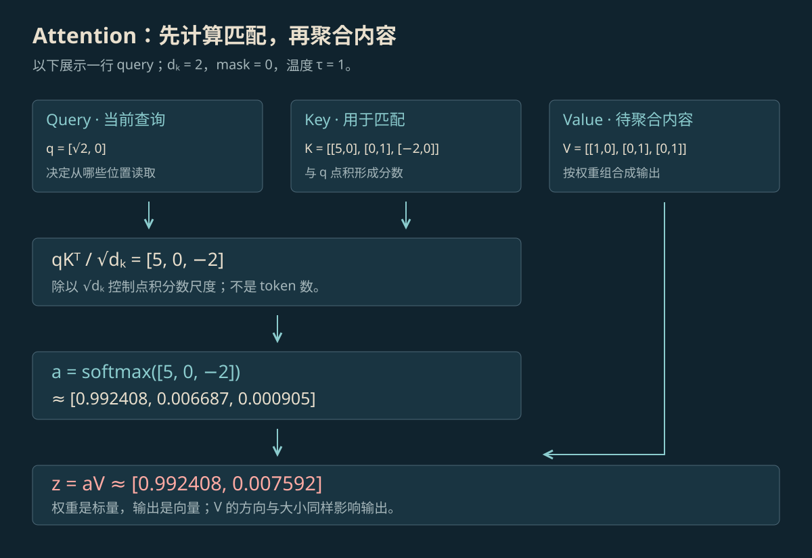

11 / 082026文章Agent 学习·1 分钟阅读Softmax 与 Attention 原理：公式、计算与注意力稀释Attention 决定从前文各处取多少信息，Softmax 负责把分数换成比例。从 Q、K、V 的含义开始，逐步算出这些比例，再说明内容变多时，为什么一条信息分到的比例可能变小。阅读全文 ↗
11 / 082026文章Agent 学习·1 分钟阅读Supervisor、Verify 与 Eval：职责、机制与对比Supervisor 决定下一步做什么，Verify 检查眼前的结果是否符合要求，Eval 记录并比较任务做得怎样。这篇说明三者怎样配合，以及漏检和误拦怎样计算。阅读全文 ↗
11 / 082026文章Agent 学习·1 分钟阅读Agent 学习目录从 Attention 怎样取信息，到 AI 怎样查资料、用工具、记住事情和检查结果，按问题查阅 15 篇学习文章。阅读全文 ↗
11 / 042026文章学习心得·1 分钟阅读Jev 阅读笔记：选好类别以后，程序还要检查什么用一条新闻说明怎样给 AI 准备材料和选项，以及怎样读它返回的概率。选中了类别，并不等于可以直接发布。阅读全文 ↗
10 / 302026文章项目手记·1 分钟阅读MineClaw：检查游戏里是否真的完成任务用“背包里至少有四个原木”的教学例子说明：工具说成功，还要看游戏里的实际结果。现有控制台截图展示的是待连接界面。阅读全文 ↗